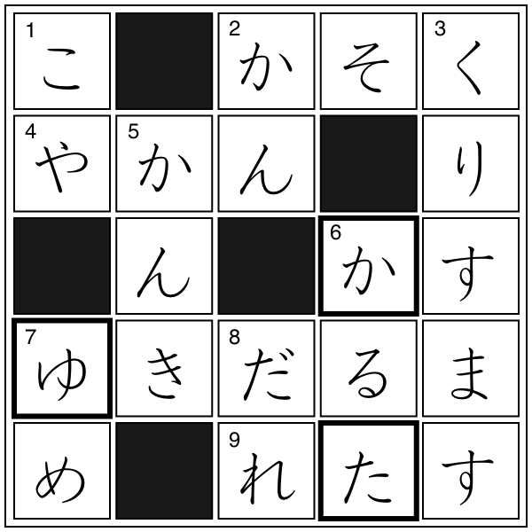

クロスワード
解答
クロスワード

【→
問題
〔
PDFファイル
〕
】
太枠の文字を組み合わせてできる単語
ゆかた（浴衣）
例文
ゆかたを着て、まつりに出かける。
単語リスト
語(読み)
漢字／原語
分類
発音
中文意思
▼
は１級相当の単語と漢字、
▽
は１級リスト外の漢字、*は特殊な読みを示す
こや
小屋
2
かん
▼
缶
1
クリスマス
Christmas
外来語
3
かんき
換気
-スル
0
カルタ
carta
（ポルトガル語）
外来語
1
ゆめ
夢
2
だれ
▼
誰
1
かそく
加速
-スル
0
やかん
*薬缶
0
かす
▽
滓
1
ゆきだるま
雪*達磨
3
レタス
lettuce
野菜
1
ゆかた
浴衣
0
ページの先頭へ↑
←ひとつ前に戻る
目次へ
トップページへ